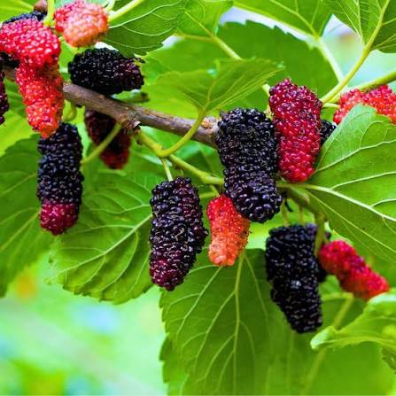

เรื่องราวของสี
ที่สุกงอมทีละผล
จากผลอ่อนสีเขียวริมกิ่ง สู่สีแดง ม่วง และดำเข้มเมื่อสุกเต็มที่ — มัลเบอรี่คือผลไม้ที่เล่าเรื่องการเติบโตผ่านสีสันของมันเอง พร้อมคุณค่าทางโภชนาการที่ซ่อนอยู่ในทุกเม็ด

จากต้นหม่อน
สู่ผลไม้แห่งสีสัน
มัลเบอรี่ (Mulberry) คือผลจากต้นหม่อน ไม้ยืนต้นที่คนไทยคุ้นเคยกันดีในฐานะพืชอาหารของหนอนไหม ก่อนจะได้รับความนิยมมากขึ้นในฐานะผลไม้รับประทานสด
ผลมีตั้งแต่ขนาดเล็กไปจนถึงยาวรี สีเปลี่ยนแปลงไปตามระยะการสุก ตั้งแต่เขียว แดง ม่วง จนถึงดำสนิท และสามารถนำไปแปรรูปได้หลากหลายรูปแบบ ทั้งแยม น้ำผลไม้ และของหวาน
เส้นทางของมัลเบอรี่
ผ่านกาลเวลา
จากพืชคู่อุตสาหกรรมไหมโบราณ สู่ผลไม้เพื่อสุขภาพในสวนยุคปัจจุบัน
จุดกำเนิดริมแม่น้ำ
ต้นหม่อนมีถิ่นกำเนิดในประเทศจีน ปลูกเพื่อเป็นอาหารของหนอนไหมมานานนับพันปี เป็นรากฐานสำคัญของอุตสาหกรรมผ้าไหมโบราณ
เดินทางไกลตามเส้นทางสายไหม
พร้อมกับการค้าผ้าไหม ต้นหม่อนแพร่กระจายไปตามเส้นทางสายไหมสู่เอเชียกลาง เปอร์เซีย และภูมิภาคเมดิเตอร์เรเนียน จนกลายเป็นไม้ผลที่ปลูกกันแพร่หลายทั่วโลก
สู่แผ่นดินไทย
หม่อนเข้ามาในไทยพร้อมกับการส่งเสริมอุตสาหกรรมไหมในหลายภูมิภาค โดยเฉพาะภาคเหนือและอีสาน ก่อนจะขยายบทบาทจากพืชอาหารไหมสู่ไม้ผลเพื่อการบริโภค
ผลไม้แห่งยุคสมัยใหม่
ปัจจุบันมีการพัฒนาสายพันธุ์มัลเบอรี่เพื่อผลสด ทั้งขนาด รสชาติ และสีสัน ทำให้กลายเป็นผลไม้สุขภาพที่ปลูกได้ตั้งแต่สวนขนาดใหญ่ไปจนถึงกระถางหน้าบ้าน
คุณค่าทางโภชนาการ
ในผลเล็ก ๆ
มัลเบอรี่อุดมไปด้วยสารอาหารหลายชนิดที่พบได้ตามธรรมชาติของผลไม้ตระกูลเบอร์รี่
ระดับเปรียบเทียบโดยประมาณเมื่อเทียบกับผลไม้ทั่วไป ใช้เพื่อการศึกษาเบื้องต้นเท่านั้น
สารต้านอนุมูลอิสระ
สีม่วงดำเข้มของผลสุกมาจากสารกลุ่มแอนโทไซยานิน ซึ่งเป็นสารต้านอนุมูลอิสระตามธรรมชาติที่พบมากในผลไม้ตระกูลเบอร์รี่
วิตามินหลากหลาย
อุดมด้วยวิตามินซีและวิตามินเค ซึ่งเป็นสารอาหารที่ร่างกายต้องการในแต่ละวัน
ใยอาหารและแร่ธาตุ
มีใยอาหารช่วยเรื่องระบบขับถ่าย พร้อมแร่ธาตุอย่างธาตุเหล็กที่จำเป็นต่อร่างกาย
สีสันที่ค่อย ๆ เปลี่ยนไป
จากผลอ่อนสีเขียว สู่ผลสุกสีม่วงดำที่เป็นเอกลักษณ์ของมัลเบอรี่
เขียว
ผลอ่อน เริ่มต้นการเติบโต
แดง
เริ่มเปลี่ยนสีและมีรสชัดขึ้น
ม่วงแดง
สีเข้มขึ้นเมื่อผลเริ่มสุก
ม่วงดำ
ผลสุกเต็มที่ สีเข้มโดดเด่น
สายพันธุ์ที่น่าสนใจ
แต่ละสายพันธุ์มีลักษณะเด่นและรสชาติเฉพาะตัว — คัดสรรสายพันธุ์ยอดนิยมมาให้ศึกษา
ปลูกมัลเบอรี่
ให้เติบโตในสวน
จุดเริ่มต้นเล็ก ๆ จากต้นหม่อน สามารถกลายเป็นสวนที่เต็มไปด้วยสีเขียวและผลไม้ได้
ปลูก
เลือกพื้นที่ที่ได้รับแสงแดดเพียงพอ และเตรียมดินให้ระบายน้ำได้ดี
ดูแล
รดน้ำสม่ำเสมอ ตัดแต่งกิ่งเป็นระยะ เพื่อให้ทรงพุ่มแข็งแรงและโปร่ง
เก็บเกี่ยว
สังเกตสีของผล เก็บเกี่ยวเมื่อผลเปลี่ยนเป็นสีเข้มตามลักษณะของแต่ละสายพันธุ์
ความสดที่เริ่มต้นจากต้นหม่อน
สีเขียวของใบไม้ สีแดงของผลอ่อน และม่วงดำของผลสุก — ทุกสีคือเรื่องราวของธรรมชาติที่เปลี่ยนแปลงอยู่เสมอ